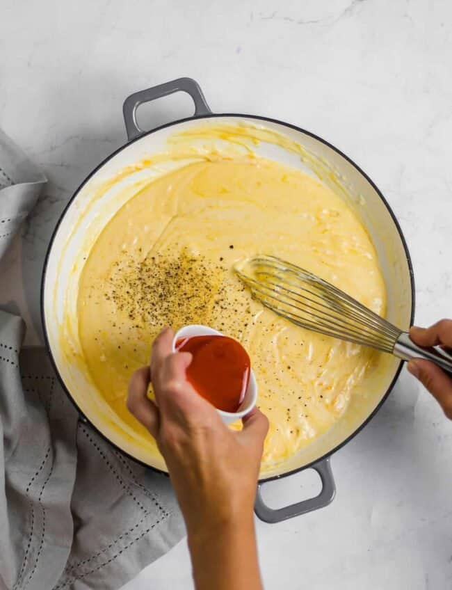

Cheese Recipe

Discription
Cheese is a dairy product made from curdled milk,
typically from cows, goats, or sheep, that undergoes
various processes such as fermentation, aging, and pressing,
resulting in a wide range of flavors, textures, and types, making it a versatile
ingredient used in various cuisines around the world.
Ingredients
- 1 gallon (3.8 liters) of milk (can use cow's milk, goat's milk, or sheep's milk)
- 1/4 teaspoon mesophilic starter culture (specific to the type of cheese you want to make)
- 1/4 teaspoon calcium chloride (if using pasteurized milk)
- 1/4 teaspoon liquid rennet (vegetable or animal-based)
- 1 tablespoon cheese salt
Steps
- Heat and culture: Heat the milk, add mesophilic starter culture, and let it sit for a few minutes to rehydrate.
- Add rennet: Dissolve liquid rennet in water, add it to the milk, and stir gently.
- Form curds: Let the milk sit undisturbed until it forms a clean break, then cut the curds into small cubes.
- Cook and stir: Heat the curds slowly while stirring gently to reach the target temperature.
- Mold and press: Ladle the curds into molds lined with cheesecloth, sprinkle with salt, and press with weight.
- Shape and consolidate: Let the cheese sit at room temperature, periodically flipping and repressing it.
- Age: Optionally, age the cheese in a cool, humid environment for the recommended time.
- Unmold and unwrap: Remove the cheese from the molds and carefully unwrap the cheesecloth.
- Optional brining: Some cheeses benefit from being immersed in a brine solution for added flavor and preservation. If desired, prepare a brine solution according to the recipe and soak the cheese for the recommended time.
- Aging: Transfer the cheese to a cool, humid environment such as a cheese cave or refrigerator. Age the cheese for the specified duration, turning it periodically to ensure even aging.
- Monitoring and care: During the aging process, monitor the cheese for any signs of mold or spoilage. Maintain the appropriate temperature and humidity conditions recommended for the cheese type.
- Taste and enjoy: Once the aging period is complete, your cheese is ready to be enjoyed! Slice it, grate it, or incorporate it into your favorite dishes.